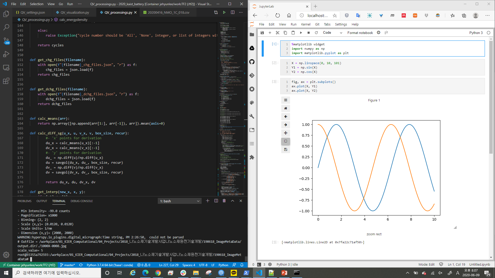
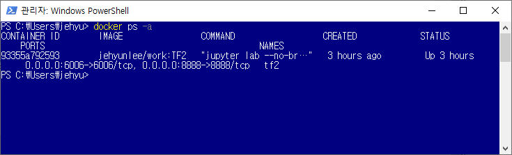
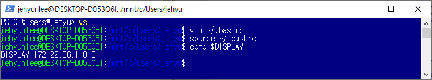
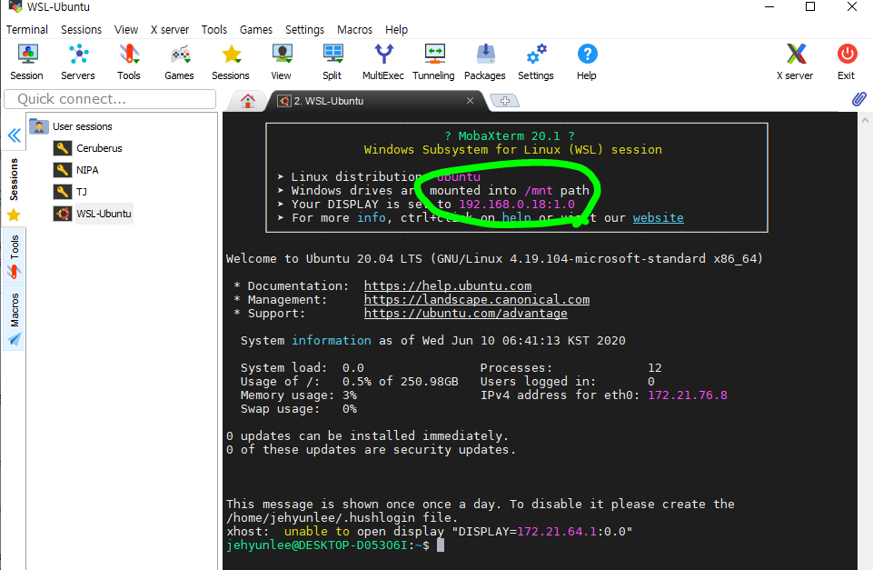
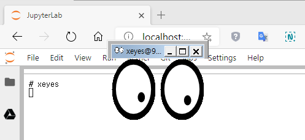
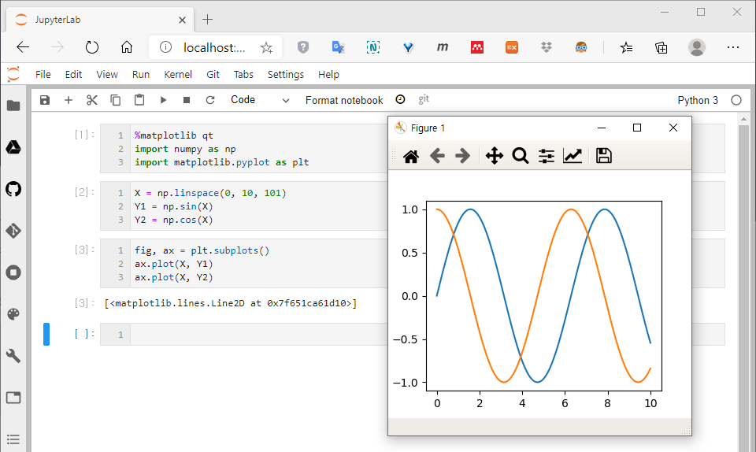
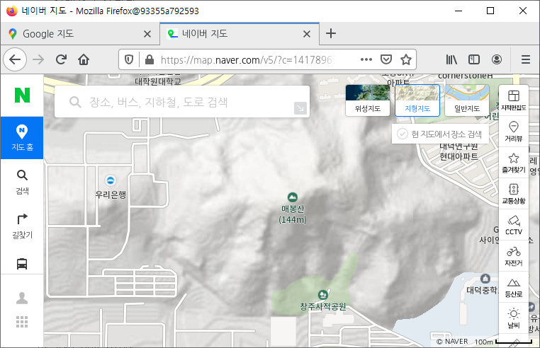

References
Microsoft: WSL 2와 WSL 1 비교
Microsoft: Windows 10에 Linux용 Windows 하위 시스템 설치 가이드
docker blog: Docker Desktop: WSL 2 Best practices
ubuntu Discourse: Getting graphical applications to work on WSL2
Visual Studio Code: Developing in WSL
홀로 떠나는 여행: docker와 GUI 환경 연결
- Microsoft에서 출시한 WSL 2와 docker의 궁합이 매우 좋습니다.
- 특히 WSL 2에 Docker를 설치하면 wsl의 단점을 메워줍니다.
- 여기에 VSCode를 끼얹어주면 개발 환경이 상당히 편리해집니다.
1. WSL 단독 또는 Windows + Docker 사용시 불편한 점
WSL을 2018년 초부터 1년여 사용할 때 불편한 점들이 있었습니다.
당시 테스트 버전이던 WSL 2를 설치하고 윈도가 날아간 뒤 도커를 1년 좀 안되게 썼는데, 여기에도 불편한 점들이 있었습니다.
1. WSL이건 docker건 따로 실행해야 합니다 :- Ubuntu 기반의 개발 환경을 원하는 것이지 Linux 자체를 원한 건 아닙니다.
2. WSL 파일 공유가 불편합니다 :
- 윈도에서 WSL로 복사한 파일은 실시간 인식이 되지 않습니다.
3. 옷 위에 옷을 껴입는 느낌입니다 :
- 윈도 부팅 → 도커 실행 → 컨테이너 실행으로 이어지는 과정이 번거롭습니다.
2. WSL + Docker + VSCode
- 제가 피부로 느끼는 WSL + Docker + VSCode 시스템의 장점은 다음과 같습니다.
1. docker를 따로 실행할 필요가 없습니다 :- 부팅시 윈도가 docker를 띄우고 vscode가 컨테이너를 불러줍니다.
- docker의 volume share를 통해 실시간 공유가 됩니다.
- 라이브러리 설치 등을 제외하고는 vscode, 탐색기 모두 윈도에서 씁니다.

심지어
docker ps등의 명령도 윈도 파워셸에서 실행할 정도로 자연스럽습니다.
모든 환경이 windows 자체를 쓰는 느낌이 장점이기도 하지만 단점일 때도 있습니다.
docker container에서 X-Window를 띄우려면 어디를 손댈지 조금 난감하기 때문입니다.
아무 설정을 하지 않으면 아래 메시지 이후 에러가 나고 실행이 되지 않습니다.
1
2QStandardPaths: XDG_RUNTIME_DIR not set, defaulting to '/tmp/runtime-root'
QXcbConnection: Could not connect to displayWSL에 설치된 docker에서 X-Window를 띄우려면 약간의 수고가 필요합니다.
2. X-Window on Docker on WSL 2 설정
- 다음과 같은 순서로 진행합니다.
1. (Windows) Xserver 설치 : VcXsrv 등을 설치하고 실행합니다.
- XLaunch의 Extra settings에 나오는 Disable access control을 체크합니다.
- mobaXterm을 설치하는 것도 방법입니다.
- mobaXterm은 ssh, sftp, display를 한 곳에서 사용하고 저장할 수 있어 편리합니다.
2. (WSL) export DISPLAY : Windows Powershell에서 wsl을 실행해 WSL로 들어갑니다.
.bashrc에 DISPLAY 설정을 다음과 같이 추가합니다.1
2
3
4
5
6export DISPLAY=$(grep -m 1 nameserver /etc/resolv.conf | awk '{print $2}'):0.0
# Linux Desktop에 설치된 도커라면 이 과정이 필요 없기도 합니다.
xhost +local:docker # docker에서 실행되는 모든 프로그램을 X-Window와 통신하게 해줍니다.
# 제 경우는 이 설정은 동작하지 않은 듯 하나 문제가 없었습니다.
# 이 명령을 실행하려면 apt-get install x11-apps 를 먼저 실행해야 합니다.source ~/.bashrc명령으로 설정을 적용합니다.
- mobaXterm을 설치했다면 mobaxterm에 보이는 IP를 적용해야 합니다.

3. (WSL) Container 띄우기 : X11과 DISPLAY를 공유하도록 실행합니다.
-v /tmp/.X11-unix:/tmp/.X11-unix과-e DISPLAY=$DISPLAY가 핵심입니다.- 윈도와 공유할 폴더를
-v /mnt/c/{로컬디렉토리}:/{wsl디렉토리}방식으로 추가 지정합니다. -e DISPLAY=$DISPLAY가 안되면-e DISPLAY=unix$DISPLAY로 해 봅시다.1
$ docker run -it --name={컨테이너 이름} -v /tmp/.X11-unix:/tmp/.X11-unix -v /mnt/c/{로컬디렉토리}:/{wsl디렉토리} -e DISPLAY=$DISPLAY -p 8888:8888 -p 6006:6006 {docker image}
4. (Docker) X-Window 확인 : 컨테이너에 들어가서 X-Window를 띄워봅니다.
- 간단한 X-Window 앱을 설치하고 실행해봅시다.
1
2
3$ apt-get update
$ apt-get install x11-apps
$ xeyes
2. X-Window on Docker on WSL 2 실행
- 이제 리부팅을 해도 docker에서 X-Window를 띄워볼 수 있습니다.
- Jupyter에서
%matplotlib qt로 새 창에 그래프를 띄운 모습입니다.
 - 네이버 지도도 firefox에서 잘 떴습니다. GIS 작업도 문제 없겠군요. :)
